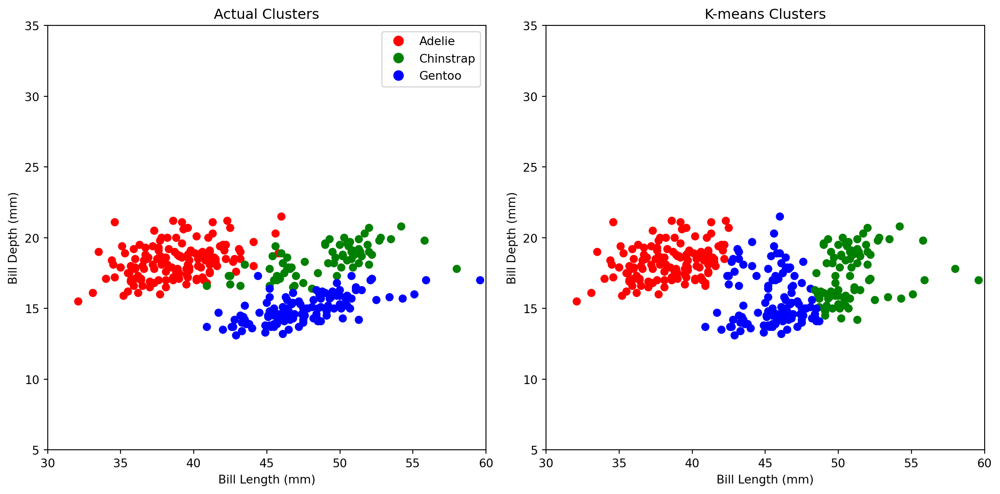
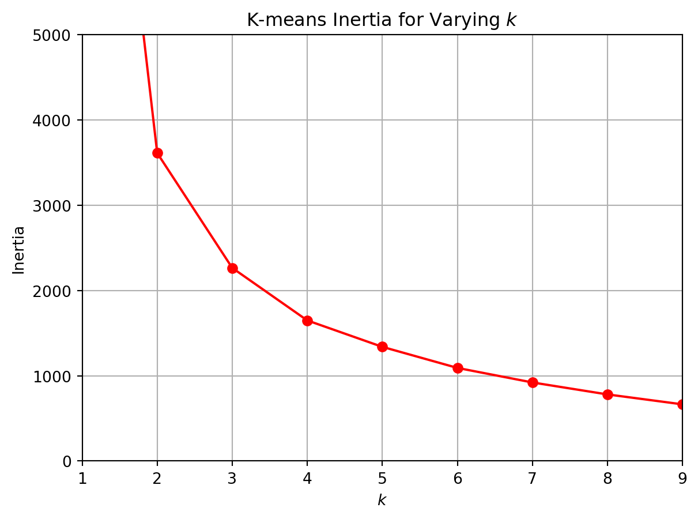
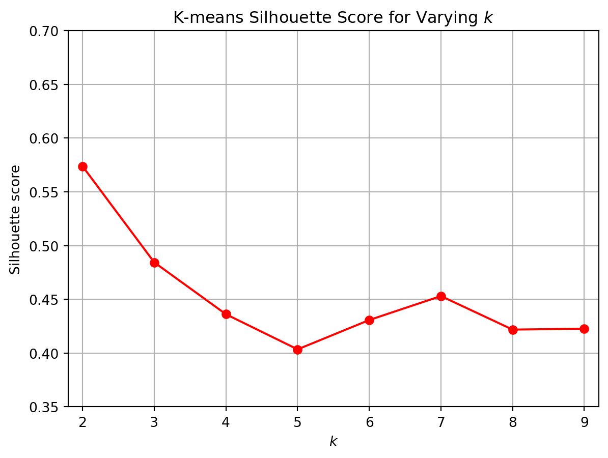

Imports
import numpy as np
import pandas as pd
import matplotlib.pyplot as plt
import warnings
# Suppress all warnings
warnings.simplefilter("ignore")Mark Hamilton
December 3, 2023
Clustering is a type of unsupervised learning that attempts to group unlabeled data together. Let’s use the penguins dataset from Seaborn to explore clustering.
| species | island | bill_length_mm | bill_depth_mm | flipper_length_mm | body_mass_g | sex | |
|---|---|---|---|---|---|---|---|
| 0 | Adelie | Torgersen | 39.1 | 18.7 | 181.0 | 3750.0 | Male |
| 1 | Adelie | Torgersen | 39.5 | 17.4 | 186.0 | 3800.0 | Female |
| 2 | Adelie | Torgersen | 40.3 | 18.0 | 195.0 | 3250.0 | Female |
| 3 | Adelie | Torgersen | NaN | NaN | NaN | NaN | NaN |
| 4 | Adelie | Torgersen | 36.7 | 19.3 | 193.0 | 3450.0 | Female |
The penguins dataset contains 344 data points describing 7 different features of penguins. There are 3 different penguin species: Adelie, Chinstrap, and Gentoo. As we can see, there are some null values in the table. Let’s get rid of those.
We dropped 11 rows with null values.
Let’s perform k-means clustering on this dataset. K-means clustering is use to partition a dataset into \(k\) separate clusters. It works by first initializing \(k\) random points and treating them as centroids of a cluster. Each point determines its cluster by finding the nearest centroid. Then the centroids are updated to be at the middle of the cluster. Since the centroids move, each point now may be closer to a different centroid, so this process repeats until the centroids stop moving.
Let’s use k-means clustering to group the dataset into clusters based on bill size. We will use bill length combined with bill depth to determine bill size. Each cluster will hopefully represent a different penguin species. Since we already know that there are 3 different penguin species, let’s set \(k\) equal to 3 for now.
fig, axes = plt.subplots(1, 2, figsize=(12, 6))
# Plot for actual species
species_colors = {'Adelie': 'red', 'Chinstrap': 'green', 'Gentoo': 'blue'}
axes[0].scatter(penguins['bill_length_mm'], penguins['bill_depth_mm'], c=penguins['species'].map(species_colors))
axes[0].set_title('Actual Clusters')
axes[0].set_xlabel('Bill Length (mm)')
axes[0].set_ylabel('Bill Depth (mm)')
axes[0].set_xlim(30, 60)
axes[0].set_ylim(5, 35)
# Create legend
from matplotlib.lines import Line2D
adelie = Line2D([0], [0], marker='o', color='w', markerfacecolor='red', markersize=10, label='Adelie')
chinstrap = Line2D([0], [0], marker='o', color='w', markerfacecolor='green', markersize=10, label='Chinstrap')
gentoo = Line2D([0], [0], marker='o', color='w', markerfacecolor='blue', markersize=10, label='Gentoo')
axes[0].legend(handles=[adelie, chinstrap, gentoo], loc='upper right')
# Plot for k-means
cluster_colors = {0: 'red', 1: 'green', 2: 'blue'}
axes[1].scatter(penguins['bill_length_mm'], penguins['bill_depth_mm'], c=kmeans_pred.map(cluster_colors))
axes[1].set_title('K-means Clusters')
axes[1].set_xlabel('Bill Length (mm)')
axes[1].set_ylabel('Bill Depth (mm)')
axes[1].set_xlim(30, 60)
axes[1].set_ylim(5, 35)
plt.tight_layout()
plt.show()
K-means did a good job of predicting Adelie penguins, but did not do so great for the other 2 species. Since k-means wants each point to be in the cluster with the closest centroid, k-means likes clusters that are fairly circular, and has a hard time identifying clusters with different shapes. We can see that happening in this dataset. The actual clusters are long blobs, but k-means identified more circular-looking blobs.
Let’s take a look at the inertia of the model.
Inertia is a metric that shows how close the points in the dataset are to a cluster. It is calculated by taking the sum of the squared distances between each point and its centroid. Since the distances will depend on how spread out the values in the dataset are, a single value for inertia does not mean much on its own. It is instead used to compare against inertia values for different values of \(k\) for the same dataset, in order to find the optimal value for \(k\).
Let’s now pretend that we do not know the correct value of \(k\), and we want to find it. Let’s take a look at the inertia if we adjust k.
kmeans_per_k = [KMeans(n_clusters=k, random_state=42).fit(penguins[['bill_length_mm', 'bill_depth_mm']])
for k in range(1, 10)]
inertias = [model.inertia_ for model in kmeans_per_k]
plt.plot(range(1, 10), inertias, "ro-")
plt.title("K-means Inertia for Varying $k$")
plt.xlabel("$k$")
plt.ylabel("Inertia")
plt.axis([1, 9, 0, 5000])
plt.grid()
plt.show()
Inertia will always decrease as \(k\) increases. This is because adding more centroids will only decrease the distance between each point and a centroid. Inertia will decrease until \(k\) equals the number of points in the dataset, because then, each centroid will be on top of each data point, so the distances will all equal zero, and so will the inertia.
So knowing that inertia will always decrease, we want to find the point in the graph where the inertia stops decreasing rapidly. This can be done using calculus, but it can also be done by identifying th “elbow” of the curve. Here, it looks like the elbow is at 3 or 4, so we should either set \(k\) to 3 or 4 in our model.
Another metric for k-means clustering is silhouette score. The silhouette score shows how well-separated the clusters are. This is the formula for silhouette score:
\(\frac{b - a}{max(b, a)}\)
\(b\) is the average distance to the nearest cluster, and \(a\) is the average distance within a cluster. The silhouette score is always between -1 and 1, so unlike inertia, it can be used on its own as a performance metric.
Let’s see the silhouette scores for different values of k.
from sklearn.metrics import silhouette_score
silhouette_scores = [silhouette_score(penguins[['bill_length_mm', 'bill_depth_mm']], model.labels_)
for model in kmeans_per_k[1:]]
plt.plot(range(2, 10), silhouette_scores, "ro-")
plt.title("K-means Silhouette Score for Varying $k$")
plt.xlabel("$k$")
plt.ylabel("Silhouette score")
plt.axis([1.8, 9.2, 0.35, 0.7])
plt.grid()
plt.show()
The silhouette scores indicate that \(k=2\) would create the best clusters. This is consistent with the fact that k-means had a hard time differentiating between Chinstrap and Gentoo penguins when \(k\) was 3. But the next highest silhouette score is when \(k=3\), so if we combine our knowledge of both inertia an silhouette score, we should come to the conclusion that \(k=3\) would work well. If we want more accurate clustering with k-means, we could use more than two columns to predict penguin species, but that would be hard to visualize. We could also try using StandardScaler or MinMaxScaler before doing k-means to try to make the clusters more circular.